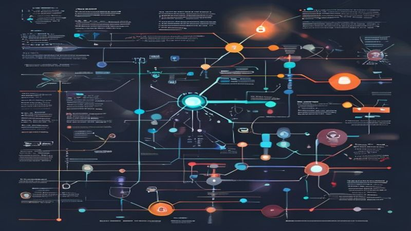
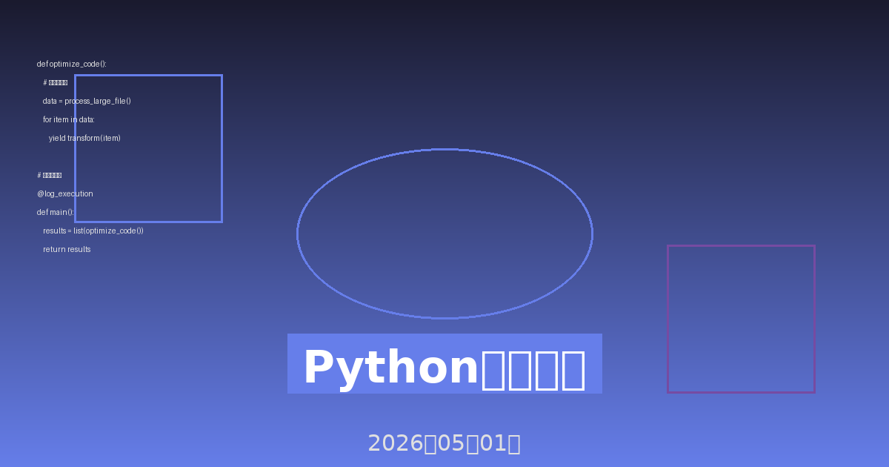

1. 引言：数据库性能的重要性
随着数字化转型的深入推进，网络安全威胁呈现出前所未有的复杂性和多样性。传统的基于规则的防御体系已经难以应对日益智能化的攻击手段。人工智能（AI）技术的兴起为网络安全领域带来了革命性的变化，通过机器学习、深度学习等技术，AI能够实时分析海量数据，识别潜在威胁，并自动采取防御措施，构建起更加智能、高效的网络安全防护体系。
在2026年，AI驱动的网络安全已经成为企业安全架构的核心组成部分。根据最新的行业报告，采用AI安全解决方案的企业在威胁检测速度上提升了300%，误报率降低了65%，整体安全事件响应时间缩短了80%。这些数据充分证明了AI在网络安全领域的巨大价值。

图1：AI驱动的网络安全防护架构示意图
2. 数据库架构设计优化
AI技术在网络安全领域的应用主要体现在以下几个方面：
2.1 智能威胁检测
传统的威胁检测依赖于预定义的规则和签名，难以发现未知威胁。AI通过机器学习算法，能够从历史攻击数据中学习攻击模式，识别出异常行为，即使面对从未见过的零日攻击也能有效检测。例如，基于深度学习的网络流量分析可以识别出正常流量中的微小异常，这些异常往往是攻击的早期迹象。
2.2 自动化事件响应
当检测到安全事件时，AI系统可以自动分析事件的严重程度，确定最佳响应策略，并执行相应的防御措施。这种自动化响应大大缩短了从检测到响应的时间窗口，减少了攻击造成的损失。例如，AI可以自动隔离受感染的设备、封锁恶意IP地址、回滚恶意配置变更等。
2.3 预测性安全分析
通过分析历史数据和当前态势，AI能够预测未来可能发生的攻击类型和攻击目标。这种预测能力使安全团队能够提前部署防御措施，变被动防御为主动防御。例如，AI可以预测某个特定行业在特定时间段内可能遭受的攻击类型，并建议相应的防护策略。

图2：AI在网络安全中的主要应用场景
3. 查询优化与索引策略
机器学习是AI在网络安全中最成熟的应用领域之一。通过监督学习、无监督学习和强化学习等技术，机器学习模型能够从海量数据中提取特征，构建威胁检测模型。
3.1 监督学习在恶意软件检测中的应用
监督学习需要标注的训练数据，在恶意软件检测中，安全研究人员会收集大量的恶意软件样本和良性软件样本，提取各种特征（如文件哈希、API调用序列、网络行为等），然后训练分类模型。常用的算法包括随机森林、支持向量机（SVM）、梯度提升树（GBDT）等。
# 示例：使用随机森林进行恶意软件检测
from sklearn.ensemble import RandomForestClassifier
from sklearn.model_selection import train_test_split
from sklearn.metrics import accuracy_score, classification_report
# 假设我们已经提取了特征数据
X = features # 特征矩阵
y = labels # 标签（0=良性，1=恶意）
# 划分训练集和测试集
X_train, X_test, y_train, y_test = train_test_split(X, y, test_size=0.2, random_state=42)
# 训练随机森林模型
rf_model = RandomForestClassifier(n_estimators=100, random_state=42)
rf_model.fit(X_train, y_train)
# 评估模型性能
y_pred = rf_model.predict(X_test)
print(f"准确率: {accuracy_score(y_test, y_pred):.2%}")
print(classification_report(y_test, y_pred))3.2 无监督学习在异常检测中的应用
无监督学习不需要标注数据，通过发现数据中的异常模式来识别威胁。常用的算法包括孤立森林（Isolation Forest）、局部异常因子（LOF）、自编码器（Autoencoder）等。这些算法特别适合检测未知威胁和零日攻击。
孤立森林是一种高效的异常检测算法，它通过随机选择特征和分割值来构建孤立树，异常点通常需要更少的分割就能被孤立，因此具有更短的路径长度。这种方法在处理高维数据时表现出色，计算复杂度低，适合实时检测。

图3：查询优化与索引策略流程
4. 数据库配置调优
深度学习通过多层神经网络自动提取特征，在处理复杂模式识别任务时表现出色。在网络安全领域，深度学习主要用于网络流量分析、用户行为分析、恶意代码识别等场景。
4.1 卷积神经网络（CNN）在流量分析中的应用
网络流量数据可以看作是时间序列数据，也可以转换为图像形式。CNN在图像识别领域的成功使其成为网络流量分析的有力工具。通过将网络流量转换为流量图像，CNN能够识别出正常流量和恶意流量之间的细微差异。
4.2 循环神经网络（RNN）在时序分析中的应用
RNN及其变体（如LSTM、GRU）特别适合处理时序数据。在用户行为分析中，RNN可以学习用户的正常行为模式，当检测到偏离正常模式的行为时，就会发出警报。例如，RNN可以学习用户的登录时间、访问的文件、使用的命令等行为序列，识别出异常的账户使用行为。
4.3 Transformer模型在日志分析中的应用
Transformer模型通过自注意力机制处理序列数据，在自然语言处理领域取得了巨大成功。在安全日志分析中，Transformer可以理解日志消息的语义，识别出异常的日志模式。与传统的基于关键词匹配的方法相比，基于Transformer的方法能够发现更隐蔽的攻击迹象。
# 示例：使用LSTM进行用户行为异常检测
import numpy as np
from tensorflow.keras.models import Sequential
from tensorflow.keras.layers import LSTM, Dense, Dropout
# 假设我们已经将用户行为序列转换为数值特征
sequence_length = 50 # 序列长度
n_features = 20 # 特征数量
# 构建LSTM模型
model = Sequential([
LSTM(128, return_sequences=True, input_shape=(sequence_length, n_features)),
Dropout(0.2),
LSTM(64, return_sequences=False),
Dropout(0.2),
Dense(32, activation='relu'),
Dense(1, activation='sigmoid')
])
model.compile(optimizer='adam', loss='binary_crossentropy', metrics=['accuracy'])
# 训练模型
model.fit(X_train, y_train, epochs=50, batch_size=32, validation_split=0.2)
# 预测异常行为
anomaly_score = model.predict(X_test)图4：深度学习在安全分析中的应用架构
5. 性能监控与诊断
AI不仅能够检测威胁，还能自动执行响应措施，形成闭环的智能防御体系。自动化响应包括威胁遏制、证据收集、系统恢复等多个环节。
5.1 智能威胁遏制
当检测到安全事件时，AI系统可以自动执行遏制措施，如：
- 网络隔离：自动将受感染的设备从网络中隔离，防止横向移动
- 账户封锁：临时锁定可疑账户，防止进一步的数据泄露
- 服务降级：降低受影响服务的权限，限制攻击者的操作范围
- 流量重定向：将恶意流量重定向到蜜罐系统，进行进一步分析
5.2 自动化取证分析
AI可以自动收集和分析攻击证据，包括：
- 日志分析：自动分析系统日志、应用日志、安全日志，提取关键事件
- 内存取证：分析内存镜像，识别恶意进程和注入的代码
- 网络取证：分析网络流量，重建攻击路径
- 文件分析：识别恶意文件，提取攻击指标（IOC）
5.3 智能系统恢复
在遏制威胁并收集证据后，AI可以协助系统恢复：
- 配置回滚：自动将系统配置恢复到攻击前的安全状态
- 数据恢复：从备份中恢复被篡改或删除的数据
- 漏洞修补：自动应用安全补丁，修复被利用的漏洞
- 服务重启：重启受影响的服务，确保业务连续性
图5：AI驱动的自动化安全响应流程
6. 高并发场景优化
尽管AI在网络安全中展现出巨大潜力，但在实际实施过程中仍面临诸多挑战。了解这些挑战并采取相应的最佳实践，对于成功部署AI安全解决方案至关重要。
6.1 数据质量与标注问题
AI模型的性能高度依赖于训练数据的质量。在网络安全领域，获取高质量的标注数据是一个巨大挑战。恶意样本往往稀缺，且攻击手法不断演变，导致模型容易过时。最佳实践包括：
- 数据增强：通过数据增强技术扩充训练数据集
- 主动学习：让模型主动选择最有价值的样本进行标注
- 迁移学习：利用预训练模型，在小数据集上进行微调
- 持续学习：建立模型更新机制，定期用新数据重新训练模型
6.2 模型可解释性
深度学习模型通常是黑盒，难以解释其决策过程。在安全领域，可解释性至关重要，因为安全分析师需要理解模型为什么将某个行为判定为威胁。最佳实践包括：
- 使用可解释模型：在可能的情况下，选择决策树、逻辑回归等可解释性强的模型
- 模型解释工具：使用LIME、SHAP等工具解释复杂模型的决策
- 特征重要性分析：分析模型关注的特征，验证其合理性
- 人机协同：将AI作为辅助工具，最终决策由安全分析师做出
6.3 对抗性攻击
攻击者可能针对AI模型本身发起攻击，通过精心构造的输入欺骗模型。对抗性攻击是AI安全系统面临的新威胁。最佳实践包括：
- 对抗训练：在训练数据中加入对抗样本，提高模型鲁棒性
- 模型集成：使用多个模型的集成结果，降低被欺骗的风险
- 输入验证：对输入数据进行严格的验证和清洗
- 异常检测：检测对抗性攻击的特征，如异常的输入分布
图6：AI安全解决方案的实施框架
7. 数据安全与备份
AI在网络安全领域的应用仍在快速发展，未来几年将出现以下趋势：
7.1 联邦学习在安全中的应用
联邦学习允许多个组织在不共享原始数据的情况下共同训练模型，这对于隐私敏感的安全场景特别有价值。通过联邦学习，多个企业可以联合训练威胁检测模型，同时保护各自的数据隐私。
7.2 生成式AI在安全中的应用
生成式AI（如GPT、DALL-E）在安全领域有广泛的应用前景，包括：
- 自动化漏洞挖掘：生成测试用例，发现软件漏洞
- 恶意代码生成检测：识别AI生成的恶意代码
- 安全文档生成：自动生成安全策略、合规报告
- 安全培训：生成个性化的安全培训内容
7.3 量子计算对安全的影响
量子计算的发展将对现有的加密体系产生重大影响。AI将在后量子密码学的研究和应用中发挥重要作用，包括：
- 量子安全算法设计：使用AI设计抗量子攻击的加密算法
- 量子攻击检测：检测量子计算发起的攻击
- 混合加密方案：设计传统加密与量子安全加密的混合方案
7.4 AI安全标准化
随着AI在安全领域的广泛应用，建立AI安全标准变得日益重要。未来将出现：
- AI安全评估标准：评估AI安全系统的性能和可靠性
- AI安全认证体系：对AI安全产品进行认证
- AI安全最佳实践指南：指导企业安全地部署AI安全解决方案

图7：AI网络安全技术的数据安全与备份
8. 结论
数据库优化策略正在重塑安全行业的格局。通过机器学习、深度学习等技术，AI能够实时检测威胁、自动响应事件、预测未来风险，构建起更加智能、高效的安全防护体系。尽管面临数据质量、模型可解释性、对抗性攻击等挑战，但随着技术的不断发展和最佳实践的积累，AI将在网络安全领域发挥越来越重要的作用。
对于企业而言，拥抱AI安全技术不再是可选项，而是必选项。那些能够成功部署AI安全解决方案的企业，将在日益复杂的安全环境中获得显著的竞争优势。未来，AI与安全的融合将更加深入，我们期待看到更多创新的应用和突破。
网络安全是一场永无止境的军备竞赛，AI为我们提供了更强大的武器。但技术本身不是万能的，人的智慧和经验仍然是安全防护的核心。AI与人的协同，才是构建真正安全体系的最佳路径。